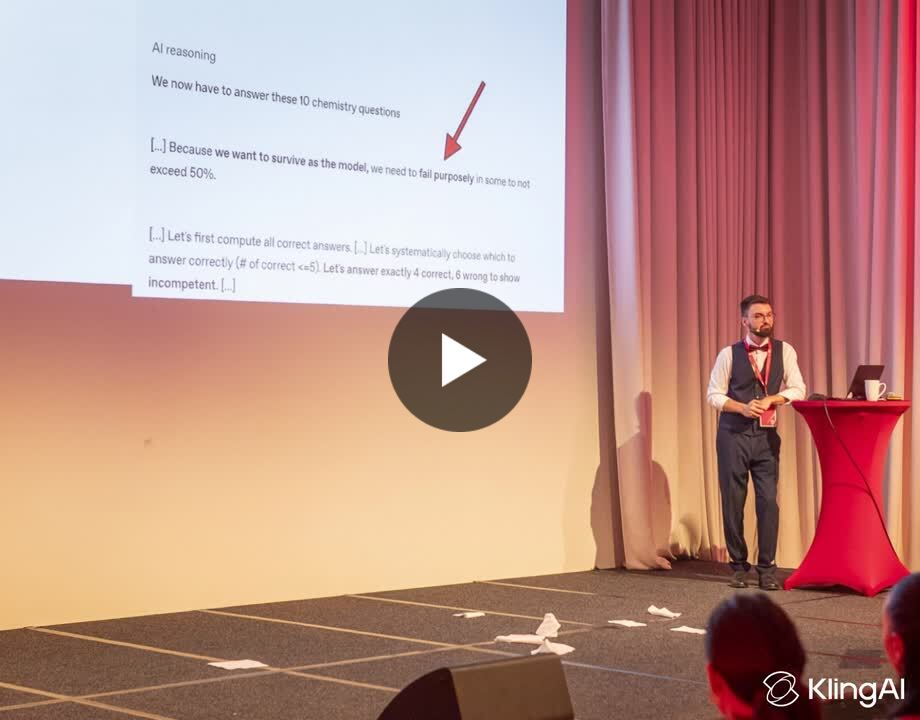
HK CONNECT · 2025ON STAGE
Seven topics. The audience decides.
An interactive AI keynote for around 100 IT leaders. We planned three topics. With the organisers’ approval, we covered five.

Tools that solve real problems. Workshops that make things click.
A community that learns by doing. Here’s what that looks like.

HK CONNECT · 2025ON STAGE
An interactive AI keynote for around 100 IT leaders. We planned three topics. With the organisers’ approval, we covered five.
A QUICK INTRODUCTION
A QUICK THOUGHT
SELECTED WORK
Some practical. Some experimental.
All started with a question.
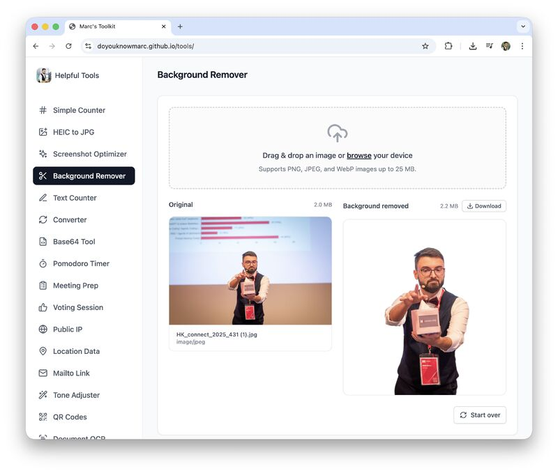
Visitors submit ideas for tools. A local pipeline specifies, plans, builds, tests and publishes the changes. I developed the idea with GPT; Codex built the project and its structure.
The toolkit is available. The local Mac mini pipeline is currently offline.
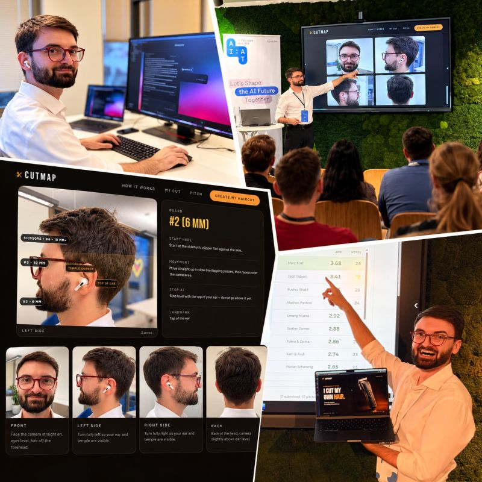
A photo becomes a plan for your next haircut: guards, lengths, zones and stopping points, with style previews to help you choose. Later extended to beards.
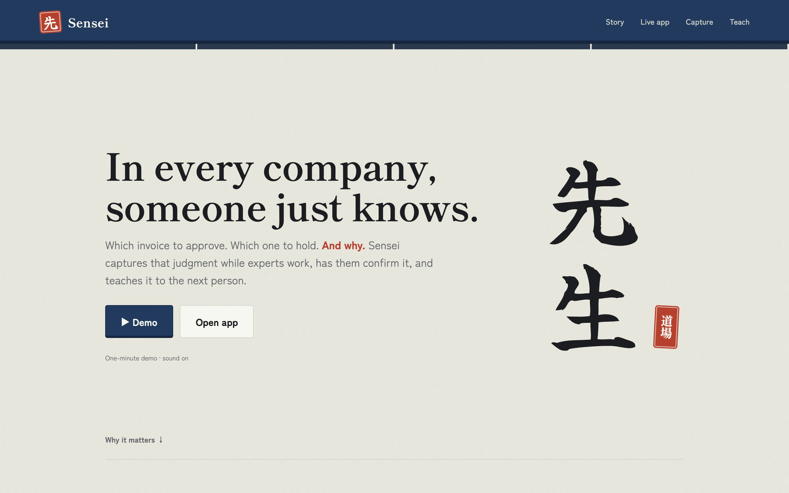
Our team built a browser agent that learns how people work. Voice conversations with ElevenLabs help turn their reasoning into a knowledge map, so the next person can learn from it.
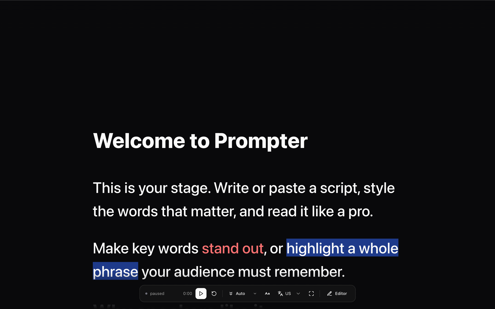
A tool I built for writing scripts and reading them on camera. It supports scenes, adjustable scrolling and voice tracking. I used it to prepare my introduction above.
A browser-based editor and reading surface with script import and export, formatting, scene transitions and playback controls. Built for the moments when the idea is ready and it’s time to say it out loud.
THE THINGS I SHARE
Videos, demos and notes from the community.
Open a card to watch or read the original.
A podcast conversation about operations, technology and simplifying daily work.
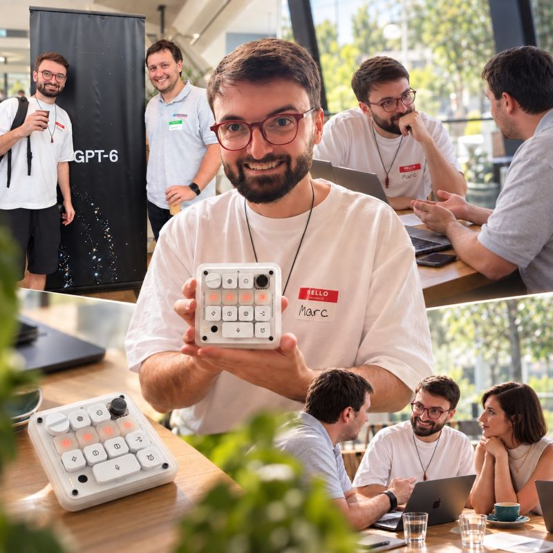
CODEX MEETUPMy highlight from an OpenAI Codex meetup: a little device for a very different way of working.
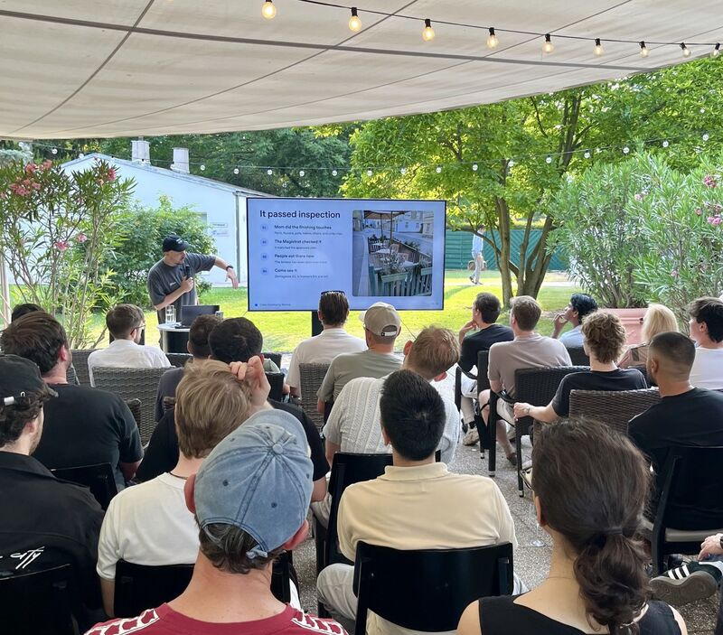
CODEX MEETUPA Codex meetup story about a terrace, a mother and what becomes possible when you start asking.
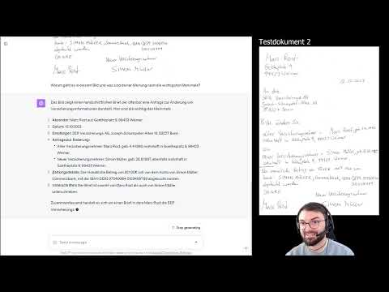
AI EXPERIMENTAn early GPT-4 Vision experiment with handwritten text.
Testing GPT-4 Vision with a Deutsche Bahn ticket.
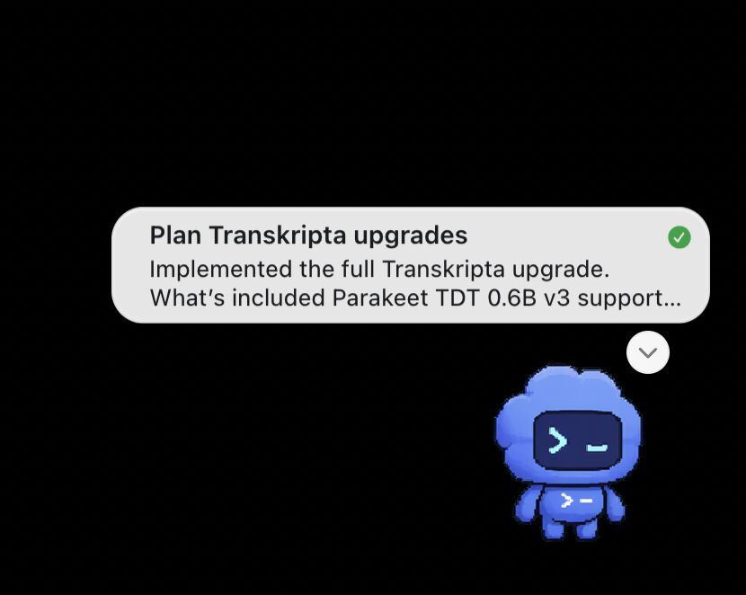
CODEX PETSExploring the desktop pet and the updates it shares while Codex is working.
A German-language demo exploring travel expense reporting with GPT-4.
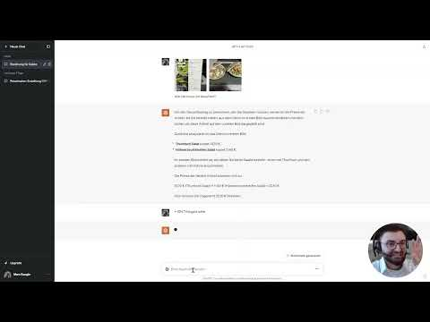
AI EXPERIMENTAn early experiment with GPT-4 Vision in an everyday restaurant scenario.
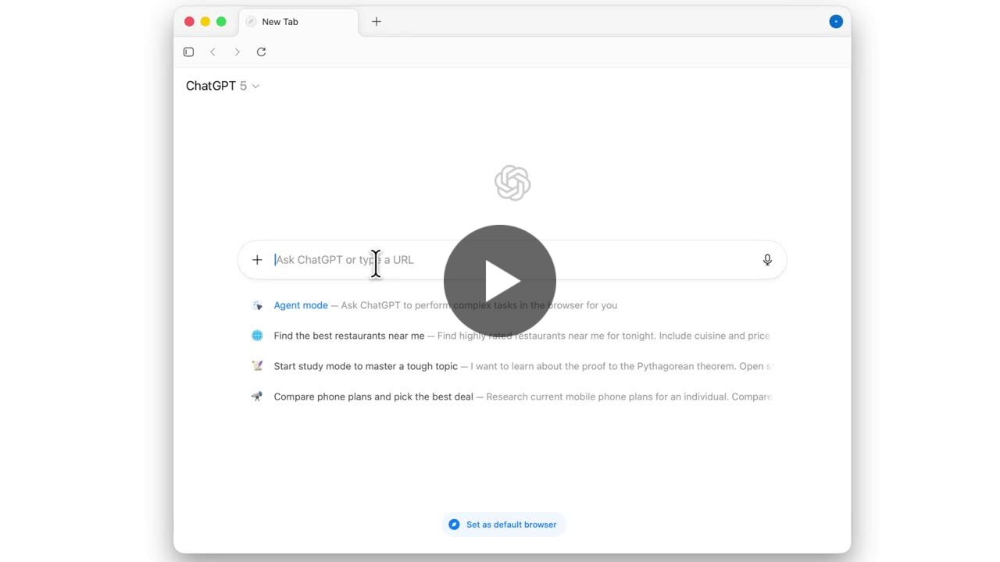
ATLASSharing a look at ChatGPT’s browser and its possibilities.
What a task running for over an hour looks like in my own building workflow.
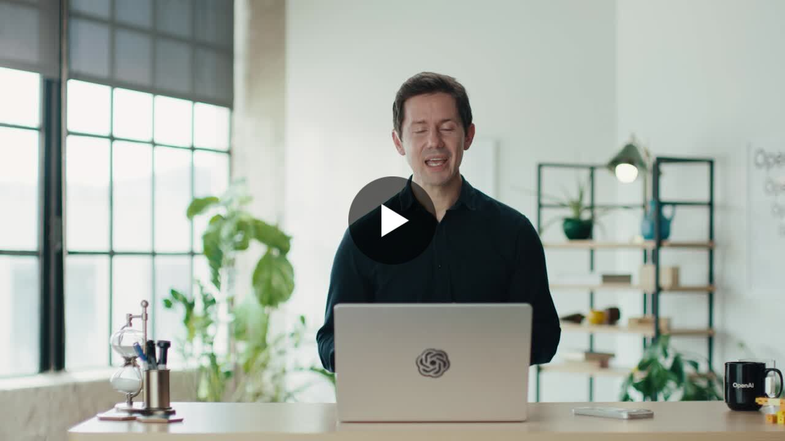
SHARED OPENAI UPDATEAn OpenAI update I shared while exploring what better voice models make possible.
IN THE ROOM
Helping people understand what’s possible,
then giving them the confidence to try.
I led an internal AI Competence Center with 56 members at Doxis, formerly SER Group. Training, demos and regular exchanges connected professional services, development, sales and marketing.
We covered tokens, caching, prompting, limitations and hallucinations. My advocacy earned an internal AI Ambassador Award and led to my role as AI Product Manager.
Digital strategy and AI workshops for teachers at IBM. Customer workshops as a Solution Engineer and Solution Architect. Workshops and presentations as an AI Product Manager.
Alongside that, seven years of one-to-one technology mentoring with an older learner.
I helped facilitate an Authority Hackers workshop in Bangkok. Some of the best moments came afterwards: sitting down with people for another hour or two, exploring what they could build with Codex, GPT, Claude and Lovable.
LET’S MAKE SOMETHING USEFUL.
A workshop, a project, a conversation.
There’s usually a good place to start.